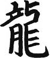

Japon tarihini işin içine fantezi, efsane, masal katmadan özetlemek zordur. Bir doğu toplumu olarak Japon tarihinde de, Şinto inancından kaynaklanan öğelerden ötürü, bizim Dede Korkut masalları gibi efsaneler vardır. Tarihi anlatmaya başlayınca, daha Japonların nereden geldiği konusunda tartışmalar başlar; çünkü daha önce de bahsettiğim gibi Japonlar gökten zembille indiklerine inanıyorlar.
Biraz daha aklı başında tarihçiler Japonların bir Orta Asya toplumu olduklarını, zamanın bir yerinde Kore yarımadası üzerinden adalara geçtiklerini düşünür. Gerek dil yapısının gerekse de dini inanışların Asya anakarası ile gösterdiği benzerlikler bu görüşü doğrular. Hatta, Orta Asya’da bir yerlerde Türk kavimleriyle bacanak olduklarını bile iddia edenler olmuştur.
Japon adalarında ilk uygarlık izleri MÖ 10.000’lere kadar uzanıyormuş. Jomon denilen bu dönemde halk avcılık, toplayıcılık falan yapmış (Bir yerden tanıdık geliyor). Onu takip eden Yayoi döneminde zamanın Kore uygarlığı ile büyük paralellikler görülmüş: Pirinç yetiştiriciliği, demir ve bronz eşya kullanımı (Bunu da hatırlıyor gibiyim). Daha sonra, MS 300-700 arasında ölülerin özene bezene kilden yapılmış mumyaların içinde höyüklere gömüldüğü Kofun dönemi yaşanmış (Kefen acaba kofundan mı geliyor?).
Ardından, birbirleriyle didişen (ve önemli bir kısmı kadınlar tarafından yönetilen) küçük klanlar arasından Yamatolar sıyrılarak ülkeyi kontrolleri altına almışlar. Bugün halen süregelen “Yamato hanedanı” başa geçerek tahminen dünyanın en uzun süreli hanedanını kurmuş. Hanedan mensupları, “Siz de kim oluyorsunuz?” diyen birkaç rakip klan liderine, “Biz güneş tanrıçası Amaterasu’nun soyundanız, Amaterasu’nun eltisi bizim halakızı’nın görümcesi olur” diyerek dimağları bulandırmışlar ve soylarını tanrılara dayandırarak arkayı sağlama almışlar.
Yamato hanedanı on beş asırdır iktidarda olsa da tarih boyunca şiddetli çalkantılar yaşanmaya devam etmiş. Budizmin kıta Asyasından Japonya’ya sirayet etmesi ve özellikle soylu sınıf arasında yayılmasından sonra Kofun dönemi sona ermiş. Nispeten “kurumsal” bir devlet sistemi kurulmuş ve başkent, Nara şehrine taşınarak “Nara dönemi” başlatılmış. Bu dönem, Budizmin Japonya’da yoğun bir şekilde öne çıkarıldığı bir dönem olmuş ve Nara’da halen ziyaret edebileceğiniz muhteşem tapınaklar inşa edilmiş. Elde avuçta ne varsa tapınağa, heykele, resme, kitaba ve diğer sanatlara dökülür olmuş. Budist rahipler dine karşı artan entelektüel ilgiyi “güç”e dönüştürmek istemişler ve imparatorla yavaştan çekişmeye başlamışlar. Rahiplerin devlet yönetimine burnunu sokmaya hevesli olduğunu gören imparator Kammu, laiklik ilkesinden yararlanarak yeni bir başkent kurmuş ve yönetimi buraya taşıyarak Nara tapınaklarını ofsaytta bırakmış.
Dini inanışlarla bağı koparmak o kadar kolay değil elbet; yeni başkent Kyoto’nun yeri seçilirken de rahipler epey bir fizibilite çalışması yapmış. Nehir hangi yönden akıyor, dağlar ne tarafa bakıyor, kötü ruhlar nereden gelebilir derken, sonuçta şehrin bugün halen bulunduğu arsada karar kılınmış. Kamulaştırma işlemlerinden sonra Çin’deki Tang hanedanının başkenti Xian model alınarak yeni bir şehir kurulmuş.
800’lü yıllardan 1100’lere kadar süren bu dönemde imparator ve Japon soyluları kendilerini sanata, felsefeye, güzelliğe vermişler. Dış dünyadan da önemli bir tehdit gelmemesi sonucu tamamen içlerine dönerek Japon kültürü ve sanatının en seçkin, rafine örneklerini ortaya çıkarmışlar. Ülkede bir “batı hayranlığı” baş göstermiş; Japonya’nın “batı”sında Çin bulunduğundan, Çin kültürü ve Konfüçyüs felsefesi bu dönemde Japon soyluları çok etkilemiş.
Edebiyattan çay seremonisine, birçok özgün Japon sanatı bu dönemde olgunlaşmış. İmparatorluk hanedanı ve onların etrafını kuşatan birkaç sosyetik aile ülkenin geri kalanıyla bağlarını kopararak bir tür “lale devri” yaşamışlar. Vur patlasın, çal oynasın dönemi sürerken Murasaki Shikibu isimli bir kadın yazar sosyetede dönen dolapları, entrikaları, karışık ilişkileri konu alan Genji’nin Hikâyesi isimli romanı yazmış. Edebiyat otoriteleri tarafından “dünya üzerinde yazılan ilk roman” kabul edilen ve çok beğenilen bu eser başka rakip olmadığı için o yıl Nobel Ödülünü kazanmış.
Elit kesim Kyoto’da zevk-ü sefaya dalmışken civardaki diğer klanların kanı bitlenmiş ve yeniden didişmeye başlamışlar. Eleme gruplarından sonra finale kalan Taira ve Minamotolar arasındaki savaşı uzatma dakikalarında Minamotolar kazanmış ve Kamakura’da kendilerine yeni bir başkent kurmuşlar. Minamotolar tanrısal kimliklerinden dolayı imparatorluk ailesine ve etrafındaki soylulara dokunmayıp onları Kyoto’da kendi eğlenceleri ile baş başa bırakmışlar. Ancak, güçlü bir militer yapı kurup shogunluk (orduların komutanı) ve samuraylık (asker sınıfı) müessesesini yerleştirerek “Âlemin gerçek kralı biziz” mesajını tüm yurda salmışlar.
Kamakura dönemi Zen Budizminin Japonya’da yeşerdiği bir dönem olmuş. O yıllara kadar dünyaya kısmen kapalı kalan Japonlar, Kamakura döneminde ciddi bir tehditle karşılaşmışlar: O sıralar dünyanın tozunu atmakta olan Moğollar, Kore üzerinden Japonya’ya da sarkmış ve teslim olmaları için Japonlara bir heyet göndermişler. Böyle bir isteğe karşı ne yapılacağını bilemeyen shogun heyettekilerin kellelerini vurdurmuş. Bunun üzerine Moğol imparatoru Japonya’ya bir filo göndererek adayı dümdüz etmeye niyetlenmiş. Japonya açıklarına ulaşan Moğol filosu sıkı bir tayfun tarafından alaşağı edilince shogun rahat bir nefes almış.
Tarih tekerrürden ibarettir ya, Moğollar Japonya’ya yeni bir heyet göndermiş. Sonuç? Yine heyettekilerin kafaları kesilmiş. Zıvanadan çıkan Kubilay Han Japonya’ya 100.000 kişilik devasa bir filo daha göndermiş. O zaman için çok daha üstün silahları olan ve formunun zirvesindeki Moğol ordusu karşısında, bahisçiler Japon ordusuna bire beş bin şans veriyorlarmış. Ama Kubilay Han neyi unutmuş? CNN’de hava durumunu izlemeyi! Japonya açıklarına varan muhteşem filo, korkunç bir tayfun tarafından denizin dibine yollanmış. Moğollar, “Yuh artık, olmaz bu kadar” diyerek bu sevdadan vazgeçmiş.
Japon halkı ülkelerini iki kez istiladan kurtaran bu meteorolojik olaya kamikaze (kutsal rüzgâr) adını vermişler. Bundan tam 700 yıl sonra, Japon donanması Midway Savaşını kaybedince, gümbür gümbür üzerlerine gelen ABD donanmasını alaşağı etmek için geliştirdikleri intihar uçaklarına da kamikaze demişler, belki aynı sonucu alırız diye... Ama 700 yıl içinde çok şey değişmiş, ABD donanması CNN’de hava durumunu izlemeden denize açılmaz olmuş, daha da önemlisi her şeyi yukardan bekleyen zihniyetin yerini akıl ve bilim yolu almış.
Sonuçta Japonya Moğol istilasından kurtulmuş ve shogun da haybeden “muzaffer komutan” statüsüne yükselmiş. Ama muzafferlik tek başına karın doyurmuyormuş; bir süre sonra kamu maliyesi çökmeye, bütçe açıkları verilmeye, faiz dışı fazla hedefi sapmaya başlamış. Yani kısacası samuraylar aç kalmış, shogun halk arasında popülaritesini yitirmeye başlamış. Zaten bir süredir shogunun horozluğu Kyoto’daki imparatorun kanına dokunuyormuş; bu yüzden imparator taşeron bir daimyo (denyo değil, Japon derebeyi anlamında) vasıtasıyla darbe teşebbüsünde bulunmuş. Henüz elden ayaktan düşmeyen shogun darbe girişimini savuşturarak imparatoru okyanusun ortasında küçük bir adaya sürgüne yollamış.
Ama halk aç, asker parasız, IMF ile stand-by anlaşması yapılamıyor ve ülkeye yabancı sermaye girişi söz konusu değil; bu ahval ve şerait içinde imparator sürgünden yeni bir hamle yapıp shogunu devirmiş. Ancak darbenin bütün parsasını yine imparatorluk ailesi ve soylular toplamaya çalışınca asker kesimin kayışı kopmuş ve ülke korkunç bir iç savaş dönemine sürüklenmiş. Bir sürü irili ufaklı klan tam bir toz duman ortamında birbirine girmiş; kim kiminle dost, kiminle düşman, hasımlar, müttefikler birbirine karışmış ve herkes tuttuğunu boğazlar bir vaziyette yüzyıllar geçmiş. Her gün değişen ittifaklar, ihanetler, kan revan arasında Japon tarihinin güçlü lider kişiliklerinden Nobunaga, iktidarı ele geçirmiş.
Japon tarihine “savaşan ülke dönemi” olarak geçen bu dönem, ilginçtir ki birçok Japon sanatında doruğa ulaşılan dönem olmuş. Çay seremonisi, bahçe düzenleme, ikebana (çiçek düzenleme) gibi sanatlarda mükemmelliğe yaklaşılmış. Zaten bir samurayın şiirden, bahçeden, çiçekten, böcekten anlamaması kabul edilemezmiş; gündüz kelle uçuran samuraylar, akşamüstü bahçedeki açelya fidelerini budayarak sakinleşirlermiş.
Nobunaga askeri bir deha olduğu kadar, zamanına göre çok modern, mühendislikten anlayan, ülke kalkınmasına ağırlık vermeyi düşünen, barışı sağlamlaştırmaya çalışan, diğer ülkelerle ticari ilişkiler kurmak isteyen bir lidermiş. Ancak kendi generallerinin ihanetine uğrayıp alaşağı edilmiş ve çirkinliğiyle bilinen Toyotomi Hideyoshi başa geçmiş.
Osaka’yı kendine merkez edinen Hideyoshi, yurtdışına açılmak ve Kore ile Çin’i istila etmek gibi bir hülyaya kapılmış. Deplasmanda oynamak konusunda fazla tecrübesi olmayan Japonlar başarısız olunca Hideyoshi’nin yerine oğlu Toyotomi Hideyori geçmiş.
Tüm bunlar olup biterken, ülkenin daha doğusunda, minicik bir balıkçı köyünü merkez edinmiş bir daimyo eskiden müttefiki olduğu Toyotomigillere karşı, barış ve istikrar yanlılarını toparlayarak “Yettiniz beee!” nidasıyla bir hareket başlatmış. Yuvarlak hesap olsun diye 1600 yılında saldırıya geçerek Sekigahara Savaşında Toyotomi’yi tepelemiş ve ülke genelinde yönetimi ele almış.
Savaşı kazanan daimyo olan Tokugawa Ieyasu, TV izleyicimize çok da yabancı bir karakter değil. 1980’lerin başında, henüz ortalıkta yüzlerce lüzumsuz kanal ve binlerce yerli dizi yokken, TRT’de Shogun diye bir dizi oynardı. İşte bu dizi tam yukarda bahsettiğim dönemde geçiyordu. Dizideki “Toranaga-San”, tarihteki Tokugawa Ieyasu’ya karşılık gelirdi. Toranaga San’ın İngiliz kankası Kaptan Blackthorne ise Japonlar tarafından evlat edinilince ismi Anjin-San olarak değiştirilmişti. Anjin-San, Toranaga’ya hem Osakalı rakiplerini hem de Portekizli Cizvit papazlarını alaşağı etmek konusunda büyük yardımda bulunmuştu.
O yıllarda dizinin ertesi günü sokağa fırlayarak “Vakarimasen? Hai, vakarimasu! Koniçiva, Anjin-San” gibi Japoncaya benzeyen cümleler kurardık. Onlu yaşlarımın başlarında ihanet ve sadakat, entrika ve dürüstlük gibi kavramları bu dizi pekiştirmişti. Hey gidi günler hey...
Tokugawa Ieyasu’nun konuşlandığı minik balıkçı köyünün ismi Edo’ydu. 350 yıl sonra köyün nüfusu tam 100.000 kat artacak, ismi de “Kyoto’nun doğusu” anlamına gelen To-kyo şeklinde değiştirilerek yeni başkent ilan edilecekti. Yıllar sonra, yaşlı bir Japon amca siz Tokyo’da gezinirken yanınıza yaklaşacak ve “Ah evlat, şu gördüğün arazi var ya, göz alabildiğine pirinç tarlasıydı, bana 10.000 yene satmak istemişlerdi de pahalı diye almamıştım... Şimdiki değeri ile Avrupa’da orta boy bir ülke satın alırsın” diyecekti...